文字
背景
行間


2018年7月の記事一覧
閑話 その９ フィボナッチ数列と黄金比
フィボナッチ数列｛1，1，2，3，5，8，13，21，34・・・｝と黄金比 Φ には、いろいろな関係がありそうです。
フィボナッチ数列 { Fn } の定義式は F1＝１、F2＝２、 Fn＝ Fn-1 ＋ Fn-2 （ｎ≧３）（以下、この関係式を漸化式とよぶ。）でした。定義式からフィボナッチ数列の各項はすべて整数であることは明らかですね。このとき、ｎ番目の数をいちいち足していかなくても求められると便利ですよね。つまり第ｎ項を直接求められる式がほしいわけです。数学では、数列の隣接３項間漸化式から一般項を求める問題を解いた人にはお馴染みですが、ちょっと考えてみましょう。
フィボナッチ数列の漸化式 Fn＝ Fn-1 ＋ Fn-2 ・・・①に準じて rn = rn-1 + rn-2 ・・・②を満たす（ゼロでない）r の累乗 rn の数列が存在するか調べてみましょう。②の両辺を rn-2 で割ると、 r２ = r + １ つまり r２ - r - １ = 0
$$r=\frac{1+\sqrt{5 } }{2},\frac{1-\sqrt{5 } }{2}$$ ここで、閑話その６の表記を使って $$\phi=\frac{1+\sqrt{5 } }{2},\phi'=\frac{1-\sqrt{5 } }{2}$$
とすると r = Φ または r = Φ’ のとき、累乗 rn はフィボナッチ数列の漸化式①を満たすということです。このことから、
問１ A と B を定数とするとき、任意の数列 Kn = A Φｎ＋B Φ’ｎ ・・・③も①の漸化式を満たしていることを確かめてください。
問２ ここで K1 と K2 を １として、A と B を求めてください。
以上のことと、$$\sqr{5}=\phi-\phi'$$ を使うと、フィボナッチ数列の一般項 Fn は、
$$F_n=\frac{\phi^n-\phi'^n}{\phi-\phi'}=\frac{1}{\sqr{5 } }\left[\left(\frac{1+\sqr{5 } }{2}\right)^n-\left(\frac{1-\sqr{5 } }{2}\right)^n\right]$$ ・・・④
となります。この④の式からはフィボナッチ数列の各項が、整数になるようには見えませんね。
問３ ④の式で最初の何項か実際に（工夫して）計算してみましょう。（その６の復習）
フィボナッチ数列 { Fn } の定義式は F1＝１、F2＝２、 Fn＝ Fn-1 ＋ Fn-2 （ｎ≧３）（以下、この関係式を漸化式とよぶ。）でした。定義式からフィボナッチ数列の各項はすべて整数であることは明らかですね。このとき、ｎ番目の数をいちいち足していかなくても求められると便利ですよね。つまり第ｎ項を直接求められる式がほしいわけです。数学では、数列の隣接３項間漸化式から一般項を求める問題を解いた人にはお馴染みですが、ちょっと考えてみましょう。
フィボナッチ数列の漸化式 Fn＝ Fn-1 ＋ Fn-2 ・・・①に準じて rn = rn-1 + rn-2 ・・・②を満たす（ゼロでない）r の累乗 rn の数列が存在するか調べてみましょう。②の両辺を rn-2 で割ると、 r２ = r + １ つまり r２ - r - １ = 0
$$r=\frac{1+\sqrt{5 } }{2},\frac{1-\sqrt{5 } }{2}$$ ここで、閑話その６の表記を使って $$\phi=\frac{1+\sqrt{5 } }{2},\phi'=\frac{1-\sqrt{5 } }{2}$$
とすると r = Φ または r = Φ’ のとき、累乗 rn はフィボナッチ数列の漸化式①を満たすということです。このことから、
問１ A と B を定数とするとき、任意の数列 Kn = A Φｎ＋B Φ’ｎ ・・・③も①の漸化式を満たしていることを確かめてください。
問２ ここで K1 と K2 を １として、A と B を求めてください。
以上のことと、$$\sqr{5}=\phi-\phi'$$ を使うと、フィボナッチ数列の一般項 Fn は、
$$F_n=\frac{\phi^n-\phi'^n}{\phi-\phi'}=\frac{1}{\sqr{5 } }\left[\left(\frac{1+\sqr{5 } }{2}\right)^n-\left(\frac{1-\sqr{5 } }{2}\right)^n\right]$$ ・・・④
となります。この④の式からはフィボナッチ数列の各項が、整数になるようには見えませんね。
問３ ④の式で最初の何項か実際に（工夫して）計算してみましょう。（その６の復習）
県立移管120周年記念に向けて
7月28日（土）に台風が接近するなか、午前中に鹿山会役員会が、午後に120周年記念事業実行委員会の会議が行われました。どちらも、大きな議題は120周年記念事業に関しての情報共有と取り組み状況の確認（特に来年11月9日に行われる記念式典や記念誌発行について現在までの準備状況など）を中心に課題の洗い出しとそれらへの対応方法等について話し合われました。120周年記念事業は、学校にとって大きな節目となるとても大切な事業です。これから準備について本格的に動きだすこととなりますので、PTA・鹿山会の皆様には、ご支援、ご協力のほどよろしくお願いいたします。
オーストラリア派遣
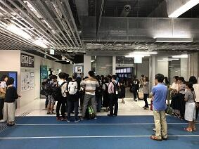昨日、成田空港にオーストラリアでのSGH海外研修に参加する生徒諸君のお見送りに行ってきました。この研修では２０名の生徒を坂本先生と内山先生が引率をしてくださります。
お見送りにいらしゃったご家族や野村教頭先生が見守るなか、チェックイン前のセレモニーでは、NAA（成田国際空港株式会社）でご勤務されている本校OBの方々からも激励のお言葉をいただきました。
生徒はNambour Christian College での研修を中心にホームスティをしながら現地の方々との交流を深めます。そのなかで、いろいろな見方、考え方や価値観に触れることでオーストラリアでSGHの課題研究も深めてまいります。研修が生徒一人一人にとって有意義なものとなり、ひと回り大きく成長して元気に帰ってくることを期待します。
お見送りにいらしゃったご家族や野村教頭先生が見守るなか、チェックイン前のセレモニーでは、NAA（成田国際空港株式会社）でご勤務されている本校OBの方々からも激励のお言葉をいただきました。
生徒はNambour Christian College での研修を中心にホームスティをしながら現地の方々との交流を深めます。そのなかで、いろいろな見方、考え方や価値観に触れることでオーストラリアでSGHの課題研究も深めてまいります。研修が生徒一人一人にとって有意義なものとなり、ひと回り大きく成長して元気に帰ってくることを期待します。
生徒会役員任命式・壮行会
 今日は、本日から任期開始となる新生徒会執行部役員の任命式と、この夏の全国高等学校総合体育大会(インターハイ)の岐阜県で開催されるカヌー競技や第42回全国高等学校総合文化祭の将棋や工芸に千葉県の代表として出場・参加出展する生徒の諸君への壮行会が行われました。壮行会では、新生徒会の増田会長から激励の言葉が贈られました。その後、野球応援でも千葉県一の応援をしてくれたラグビー部を中心とする応援委員会からエールと応援歌が贈られました。猛暑続きであったため、先生・生徒の皆さんの協力で時間は15分間とテンポよくコンパクトに行われ大変心のこもった良い会だったと思います。皆さんの健闘を祈ります。
今日は、本日から任期開始となる新生徒会執行部役員の任命式と、この夏の全国高等学校総合体育大会(インターハイ)の岐阜県で開催されるカヌー競技や第42回全国高等学校総合文化祭の将棋や工芸に千葉県の代表として出場・参加出展する生徒の諸君への壮行会が行われました。壮行会では、新生徒会の増田会長から激励の言葉が贈られました。その後、野球応援でも千葉県一の応援をしてくれたラグビー部を中心とする応援委員会からエールと応援歌が贈られました。猛暑続きであったため、先生・生徒の皆さんの協力で時間は15分間とテンポよくコンパクトに行われ大変心のこもった良い会だったと思います。皆さんの健闘を祈ります。 閑話 黄金比とフィボナッチ数列 その８
前回お話しした数列は、初項と第2項が与えれれていて第3項以降の各項は前の2項の和になっている数列でした。
ここで、初項と第2項を１とした数列{1,1,2,3,5,8,13,21,34,55,89,144,233・・・}はフィボナッチ数列として有名です。
・黄金比とフィボナッチ数列との関係を見てみよう。
黄金比 Φ の連分数による表現
$$\phi=1+\frac{1}{1+\frac{1}{1+\frac{1}{1+\frac{1}{1+\cdots}$$
を使って Φ の逐次近似値(連分数を途中で切りながら)を計算してみましょう。
１＝1
$$1+\frac{1}{1}=\frac{2}{1}$$
$$1+\frac{1}{1+1}=1+\frac{1}{2}=\frac{3}{2}$$
$$1+\frac{1}{1+\frac{1}{1+1 } }=1+\frac{1}{\frac{3}{2 } }=\frac{5}{3}$$
$$1+\frac{1}{1+\frac{1}{1+\frac{1}{1+1 } } }=1+\frac{1}{\frac{5}{3 } }=\frac{8}{5}$$
$$1+\frac{1}{1+\frac{1}{1+\frac{1}{1+\frac{1}{1+1 } } } }=1+\frac{1}{\frac{8}{5 } }=\frac{13}{8}$$
問 上記の黄金比に至る逐次近似値とフィボナッチ数列の連続する各項の比との関連性について考察してください。
ここで、初項と第2項を１とした数列{1,1,2,3,5,8,13,21,34,55,89,144,233・・・}はフィボナッチ数列として有名です。
・黄金比とフィボナッチ数列との関係を見てみよう。
黄金比 Φ の連分数による表現
$$\phi=1+\frac{1}{1+\frac{1}{1+\frac{1}{1+\frac{1}{1+\cdots}$$
を使って Φ の逐次近似値(連分数を途中で切りながら)を計算してみましょう。
１＝1
$$1+\frac{1}{1}=\frac{2}{1}$$
$$1+\frac{1}{1+1}=1+\frac{1}{2}=\frac{3}{2}$$
$$1+\frac{1}{1+\frac{1}{1+1 } }=1+\frac{1}{\frac{3}{2 } }=\frac{5}{3}$$
$$1+\frac{1}{1+\frac{1}{1+\frac{1}{1+1 } } }=1+\frac{1}{\frac{5}{3 } }=\frac{8}{5}$$
$$1+\frac{1}{1+\frac{1}{1+\frac{1}{1+\frac{1}{1+1 } } } }=1+\frac{1}{\frac{8}{5 } }=\frac{13}{8}$$
問 上記の黄金比に至る逐次近似値とフィボナッチ数列の連続する各項の比との関連性について考察してください。
SGH運営指導委員会
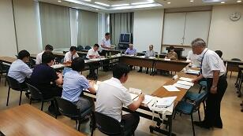本校の地域交流施設でSGH運営指導委員会が行われました。今年度文部科学省で行われる中間評価に関係して本校で作成したSGH事業の自己評価表に基づいて昨年度までの実施状況や今年度の実施計画や取り組み状況についてご説明し、そのつど、委員の皆さんから、ご指導ご助言をいただくとともにご提案をいただきました。委員の先生方からはSGHの取り組みを見ていて、生徒が1年間であるいは、経年で成長していく姿が見られることが評価されました。結果だけでなく学びのプロセスも個人個人でしっかりと評価することで、自己の課題や進歩を把握しながら学びを進めていけるよう今後も進めていきたいと思います。「日本の歴史・伝統・文化を踏まえて多文化共生社会を構築するグローバルリーダー」の育成を目指して今後とも全校体制で取り組んでまいります。
チバニアンって何だろう？
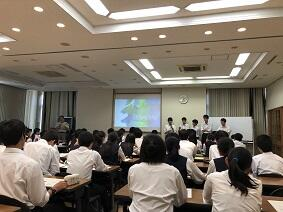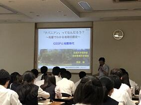
 本日は、佐倉アクティブ講座に茨城大学理学部地球環境科学領域教授の岡田誠先生にお越しいただいて講義を受けることができました。
本日は、佐倉アクティブ講座に茨城大学理学部地球環境科学領域教授の岡田誠先生にお越しいただいて講義を受けることができました。
皆さんよくご存知のように岡田誠教授は、地球の地質年代で更新世のうち、約77万年から12万6千年前の年代名称を「チバニアン」と名づけ、その基準地として千葉県市原市の地層を国際地質科学連合に申請したことで脚光を浴びた研究グループの中心的な役割を果たしている先生です。
先生からは、地層面にある生物の化石や宇宙塵、風成塵、花粉粒、大気起源の放射性核種などからは地球環境について何がどのようにわかるのか。
地層面は、ある瞬間の世界が二次元に凝縮された世界になっているので、地層からは時間を読み解くことができること。
δ18O の酸素の安定同位体の元素比から気候変動を解析する方法など、現代を紐解くため過去の状況を学ぶことの方法やおもしろさと大切さを教えていただきました。
先生には講演後の生徒からの熱心な質問にも丁寧にお答えしていただきました。岡田先生ありがとうございました。
本日は、佐倉アクティブ講座に茨城大学理学部地球環境科学領域教授の岡田誠先生にお越しいただいて講義を受けることができました。皆さんよくご存知のように岡田誠教授は、地球の地質年代で更新世のうち、約77万年から12万6千年前の年代名称を「チバニアン」と名づけ、その基準地として千葉県市原市の地層を国際地質科学連合に申請したことで脚光を浴びた研究グループの中心的な役割を果たしている先生です。
先生からは、地層面にある生物の化石や宇宙塵、風成塵、花粉粒、大気起源の放射性核種などからは地球環境について何がどのようにわかるのか。
地層面は、ある瞬間の世界が二次元に凝縮された世界になっているので、地層からは時間を読み解くことができること。
δ18O の酸素の安定同位体の元素比から気候変動を解析する方法など、現代を紐解くため過去の状況を学ぶことの方法やおもしろさと大切さを教えていただきました。
先生には講演後の生徒からの熱心な質問にも丁寧にお答えしていただきました。岡田先生ありがとうございました。
野球部の皆さん感動をありがとう！！
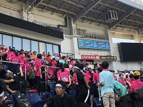


 今日９：１０よりZOZOマリンスタジアムで市立習志野高校との試合が行われました。選手の皆さんはこの猛暑のなか、集中力を切らさず本当にすばらしいプレーを続けてくれました。また、本校の応援委員会、吹奏楽部、先生、生徒、保護者の皆様による大応援団は気持ちが一体となり、最後まで勝利を信じて応援を続けることができました。何よりもこんなに気持ちよく応援ができる環境を作り出せるすばらしい人たちと一緒に応援できたことがとてもうれしかったです。
今日９：１０よりZOZOマリンスタジアムで市立習志野高校との試合が行われました。選手の皆さんはこの猛暑のなか、集中力を切らさず本当にすばらしいプレーを続けてくれました。また、本校の応援委員会、吹奏楽部、先生、生徒、保護者の皆様による大応援団は気持ちが一体となり、最後まで勝利を信じて応援を続けることができました。何よりもこんなに気持ちよく応援ができる環境を作り出せるすばらしい人たちと一緒に応援できたことがとてもうれしかったです。
試合の結果は、習志野高校には一歩及ばなかったものの、この経験から多くのことを学ぶことができ、次のステップへ進むことができると思います。
この試合で野球部も応援団から力をもらったと思いますが、野球部が見せてくれた頑張りから応援団も多くの感動と喜びをいただきました。野球部の生徒の諸君、堀内先生、藤井先生本当にありがとうございました。また、応援してくださった皆様本当にありがとうございました。今後ともよろしくお願いいたします。
今日９：１０よりZOZOマリンスタジアムで市立習志野高校との試合が行われました。選手の皆さんはこの猛暑のなか、集中力を切らさず本当にすばらしいプレーを続けてくれました。また、本校の応援委員会、吹奏楽部、先生、生徒、保護者の皆様による大応援団は気持ちが一体となり、最後まで勝利を信じて応援を続けることができました。何よりもこんなに気持ちよく応援ができる環境を作り出せるすばらしい人たちと一緒に応援できたことがとてもうれしかったです。試合の結果は、習志野高校には一歩及ばなかったものの、この経験から多くのことを学ぶことができ、次のステップへ進むことができると思います。
この試合で野球部も応援団から力をもらったと思いますが、野球部が見せてくれた頑張りから応援団も多くの感動と喜びをいただきました。野球部の生徒の諸君、堀内先生、藤井先生本当にありがとうございました。また、応援してくださった皆様本当にありがとうございました。今後ともよろしくお願いいたします。
佐倉学特別講演会
佐倉市教育委員会の佐倉学特別講演会が本日１５：００から佐倉市中央公民館でおこなわれ、生徒とともに参加させていただきました。今回の講演の講師は、２０１５年ノーベル生理学・医学賞を受賞された北里大学特別栄誉教授の大村智先生でした。「私の歩んできた道」というテーマでご講演をいただきました。先生は、天然物有機化学の世界的権威でいらっしゃいます。今までに、５００種の新規化合物を発見し、２６種は、医薬、動物薬、農業用薬剤などとして世界中で使われているそうです。なかでも、抗寄生虫薬イベルメクチンは熱帯病のオンコルセカ症やリンパ系フィラリア症の予防・治療薬として、また、沖縄地方に多く罹患者のいる糞線虫症や今まで良い治療法の無かった疥癬の治療薬として使われており、年間３億人の方が救われているそうです。先生は幼いころより、おばあさまから「人のためになることをやりなさい」と教育を受けて育ってきたそうです。このことが先生の人生感の根底にあり、研究においても世の役に立つ天然有機化合物の発見を目指して独創的な研究を推進してこられました。研究者として早い段階から海外を意識して論文を書かれるなど、ご本人の弛まぬ努力が常に良き人との出会いにつながり先生を成長させてくれたそうです。そして、先生自身も人材育成を大切にしながら研究を進めてこられたそうです。その先生が、道元禅師の「正師を得ざれば学ばざるに如かず」という言葉や教師であった先生のお母様の日記帳に書かれた言葉「教師の資格は自分自身が絶えず進歩していること」や、先生ご自身が好きな言葉として「実践躬行」（じっせんきゅうこう 理論や信条をそのとおり自分自身で実際に行う）を大切にされていたことが教師としての私にはとても印象的でした。先生のお話は多くの示唆が含まれていながら大変わかりやすく、かつユーモアに富んだお話でアッという間に講演時間が過ぎてしまいました。今日参加した生徒たちも多くのことを得られたのではないでしょうか。先生ありがとうございます。また、このような貴重な機会を与えてくださった佐倉市教育委員会へあらためて感謝申し上げます。
野球応援No.1


 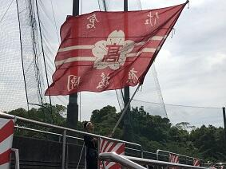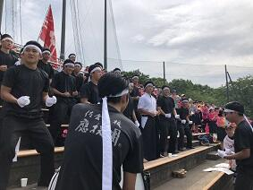
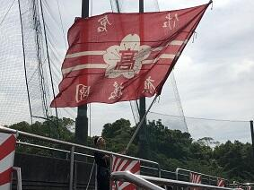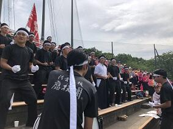


 本日７月１３日９：００から青葉の森公園野球場で、本校野球部の初戦が行われました。対戦相手は、県立四街道北高等学校でした。佐倉高校の先攻で始まりました。５回表に３点先取しましたが、その裏に１点返され、６回裏には２点取られ追いつかれました。７回表に１点取ってリードしたまま９回裏を迎えましが、ここで再度追いつかれてしまいました。延長に入ってすぐの１０回表に２点取って勝ち越しその裏は０点で抑えて勝利をつかむことができました。野球部の皆さんおめでとうございます。また、応援に駆け付けていただいた保護者の皆様、応援委員会、吹奏楽部の皆さんありがとうございした。
本日７月１３日９：００から青葉の森公園野球場で、本校野球部の初戦が行われました。対戦相手は、県立四街道北高等学校でした。佐倉高校の先攻で始まりました。５回表に３点先取しましたが、その裏に１点返され、６回裏には２点取られ追いつかれました。７回表に１点取ってリードしたまま９回裏を迎えましが、ここで再度追いつかれてしまいました。延長に入ってすぐの１０回表に２点取って勝ち越しその裏は０点で抑えて勝利をつかむことができました。野球部の皆さんおめでとうございます。また、応援に駆け付けていただいた保護者の皆様、応援委員会、吹奏楽部の皆さんありがとうございした。このまま予定通り日程が進行すれば、７月１５日に市立習志野高等学校との試合がZOZOマリンスタジアムの第１試合に予定されていますので、応援のほどよろしくお願います。
SSH特別講義
 SGHにおいては、昨日、今日と日本政策金融公庫から２名の講師が来てくださり、２年生がビジネスプランの研究の進め方など班ごとにアドバイスをいただいていました。また、SSHにおいては、KEK（高エネルギー加速器研究機構）から本校の卒業生である宍戸寿郎先生にお越しいただきました。先生は、最新宇宙論に触れられ、宇宙の成り立ちに関して、宇宙誕生直後に同じ数だけあったはずの粒子と反粒子が、現在の宇宙ではどうして、粒子ばかり存在するのかという現代物理学の謎に挑むため「CP対称性の破れ」（粒子と反粒子の性質の違い）に関する実験（電子と陽電子を衝突させる）やこの実験を行うための加速器や測定装置についてお話しいただきました。講義の最後には、生徒たちに「どの分野に進んでも、その分野に貢献できるような人になってほしい」と激励の言葉をいただきました。宍戸先生ありがとうございました。
SGHにおいては、昨日、今日と日本政策金融公庫から２名の講師が来てくださり、２年生がビジネスプランの研究の進め方など班ごとにアドバイスをいただいていました。また、SSHにおいては、KEK（高エネルギー加速器研究機構）から本校の卒業生である宍戸寿郎先生にお越しいただきました。先生は、最新宇宙論に触れられ、宇宙の成り立ちに関して、宇宙誕生直後に同じ数だけあったはずの粒子と反粒子が、現在の宇宙ではどうして、粒子ばかり存在するのかという現代物理学の謎に挑むため「CP対称性の破れ」（粒子と反粒子の性質の違い）に関する実験（電子と陽電子を衝突させる）やこの実験を行うための加速器や測定装置についてお話しいただきました。講義の最後には、生徒たちに「どの分野に進んでも、その分野に貢献できるような人になってほしい」と激励の言葉をいただきました。宍戸先生ありがとうございました。 閑話 その７ 黄金比
ある人が階段を登ろうとしています。その人は、１歩で登れるのは、最高で２段までとします。つまり、階段を１歩では１段か２段で登れるとします。いま階段が、ｎ段としたら、登り方は何通り（Fｎ）あるか考えてみましょう。
１段しかない階段なら登り方は１通り (1) しかないので F1＝１
２段だと、１段目から１段で登る方法 (1)+1 か、最初から一気に２段で登る (2) かの２通りとなるので F2＝２
３段だと、２段目から１段で登る方法 ((1)+1)+1、(2)+1 と１段目から２段で登る方法 (1)+2 の３通りあるので、F3＝３
４段だと、３段目から１段で登る方法 (((1)+1)+1)+1、((2)+1)+1、((1)+2)+1 と２段目から２段で登る方法 ((1)+1)+2、(2)+2の５通りなので、F4＝５
５段だと、4段目から１段で登る方法 ((((1)+1)+1)+1)+1、(((2)+1)+1)+1、(((1)+2)+1)+1、(((1+1))+2)+1、((2)+2)+1と３段目から２段で登る方法 (((1)+1)+1)+2、((2)+1)+2、((1)+2)+2 の８通りあるので、F5＝８ となります。
こうして、可能な登り方の数列 { Fn } は、{１，２，３，５，８、・・・}
となります。
ｎ段の階段の登り方を考えてできた数列の第３項以降の各項 Fn は、その１段前までの登り方 Fn-1 とさらにその１段前までの登り方 Fn-2 との和として表すことができます。
つまり、数列 { Fn } は、F1＝１、F2＝２、 Fn＝ Fn-1 ＋ Fn-2 （ｎ≧３）で
帰納的に定義される数列となります。
 問１ ここで違う問題を考えてみましょう。ある男が、うさぎの番（つがい）を１対、壁で囲まれた場所に放しました。ウサギの番については、毎月新しい番を生み、生まれた番も次の月から番を生むとします。そしてウサギは死なないとすると１年間に何対のウサギが生まれるでしょうか。
問１ ここで違う問題を考えてみましょう。ある男が、うさぎの番（つがい）を１対、壁で囲まれた場所に放しました。ウサギの番については、毎月新しい番を生み、生まれた番も次の月から番を生むとします。そしてウサギは死なないとすると１年間に何対のウサギが生まれるでしょうか。
問２ ここで数列 { Fn }を次のようにつくります。まず、F1、F2 を好きな数に決めます。その２つの数で和を作り3番目の数 F3 とします。更に、2番目と3番目の数の和を作り４番目の数 F4 とします。この操作を繰り返して20番目くらいまでできたら数列の比 を計算してみてください。$$\lim_{n\to \infty}\frac{F_n}{F_{n-1 } }$$ はどんな値に近づくでしょう。
を計算してみてください。$$\lim_{n\to \infty}\frac{F_n}{F_{n-1 } }$$ はどんな値に近づくでしょう。
１段しかない階段なら登り方は１通り (1) しかないので F1＝１
２段だと、１段目から１段で登る方法 (1)+1 か、最初から一気に２段で登る (2) かの２通りとなるので F2＝２
３段だと、２段目から１段で登る方法 ((1)+1)+1、(2)+1 と１段目から２段で登る方法 (1)+2 の３通りあるので、F3＝３
４段だと、３段目から１段で登る方法 (((1)+1)+1)+1、((2)+1)+1、((1)+2)+1 と２段目から２段で登る方法 ((1)+1)+2、(2)+2の５通りなので、F4＝５
５段だと、4段目から１段で登る方法 ((((1)+1)+1)+1)+1、(((2)+1)+1)+1、(((1)+2)+1)+1、(((1+1))+2)+1、((2)+2)+1と３段目から２段で登る方法 (((1)+1)+1)+2、((2)+1)+2、((1)+2)+2 の８通りあるので、F5＝８ となります。
こうして、可能な登り方の数列 { Fn } は、{１，２，３，５，８、・・・}
となります。
ｎ段の階段の登り方を考えてできた数列の第３項以降の各項 Fn は、その１段前までの登り方 Fn-1 とさらにその１段前までの登り方 Fn-2 との和として表すことができます。
つまり、数列 { Fn } は、F1＝１、F2＝２、 Fn＝ Fn-1 ＋ Fn-2 （ｎ≧３）で
帰納的に定義される数列となります。
問１ ここで違う問題を考えてみましょう。ある男が、うさぎの番（つがい）を１対、壁で囲まれた場所に放しました。ウサギの番については、毎月新しい番を生み、生まれた番も次の月から番を生むとします。そしてウサギは死なないとすると１年間に何対のウサギが生まれるでしょうか。問２ ここで数列 { Fn }を次のようにつくります。まず、F1、F2 を好きな数に決めます。その２つの数で和を作り3番目の数 F3 とします。更に、2番目と3番目の数の和を作り４番目の数 F4 とします。この操作を繰り返して20番目くらいまでできたら数列の比
短時間豪雨

 昨日7月9日の14:30からSSHの運営指導委員会が地域交流施設において行われました。その会議が終わるころから雨が降り出し、30分間くらいでしたが雷とともにものすごい雨が降りました。マレーシア、タイ、シンガポールなど東南アジアの国々のスコールのように、道路だったところが、あっという間に川に代わるような、まさにバケツで撒いたような強さと量の雨でした。
昨日7月9日の14:30からSSHの運営指導委員会が地域交流施設において行われました。その会議が終わるころから雨が降り出し、30分間くらいでしたが雷とともにものすごい雨が降りました。マレーシア、タイ、シンガポールなど東南アジアの国々のスコールのように、道路だったところが、あっという間に川に代わるような、まさにバケツで撒いたような強さと量の雨でした。この雨で恩恵を受けたとすれば東郷池の水が増えていつになく水がきれいになったことです。普段は泳いでいる姿をはっきり・くっきりとみることができない東郷池の鯉や鮒たちの姿を今日はしっかりととらえることができました。
野球応援練習


 本日、13:30から気持ちのこもった野球応援の練習が応援委員会と吹奏楽部、野球部員を中心に行われました。ここに参加してくれた生徒の諸君は、ここ一か月、文化祭の準備、自分の部活動、第２回定期考査の準備等あるなか、頑張る友人のために、応援練習を続けてきてくれました。そんな心温かい生徒諸君を見るにつけ、校長として誇りに思います。予定どおり試合が行われれば、７月１３日の青葉の森公園野球場の第１試合が本校野球部の初戦です。是非とも皆様、応援のほどよろしくお願いします。
本日、13:30から気持ちのこもった野球応援の練習が応援委員会と吹奏楽部、野球部員を中心に行われました。ここに参加してくれた生徒の諸君は、ここ一か月、文化祭の準備、自分の部活動、第２回定期考査の準備等あるなか、頑張る友人のために、応援練習を続けてきてくれました。そんな心温かい生徒諸君を見るにつけ、校長として誇りに思います。予定どおり試合が行われれば、７月１３日の青葉の森公園野球場の第１試合が本校野球部の初戦です。是非とも皆様、応援のほどよろしくお願いします。 SGH特別授業
1年生は 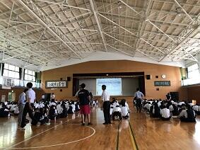
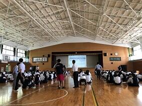
 SGHの課題研究のテーマを決めていくうえで、今後解決してみたいテーマをどのように一つに絞っていくのかが重要になります。本日は、ビジネスプラン作成を参考にして、体験的に学ぶ講座を、日本政策金融公庫 南関東創業支援センター所長でいらっしゃる寺田博史様を講師としてお招きして講義をお願いしました。考える対象を絞って、よいアイデアの出すための方法や、テーマを絞りこむための視点の置き方など
SGHの課題研究のテーマを決めていくうえで、今後解決してみたいテーマをどのように一つに絞っていくのかが重要になります。本日は、ビジネスプラン作成を参考にして、体験的に学ぶ講座を、日本政策金融公庫 南関東創業支援センター所長でいらっしゃる寺田博史様を講師としてお招きして講義をお願いしました。考える対象を絞って、よいアイデアの出すための方法や、テーマを絞りこむための視点の置き方など
これからの探究活動を進めるうえでとても大切なことを学ぶことができたと思います。暑い中、講師をお引き受けいただいた寺田先生、本当にありがとうございました。
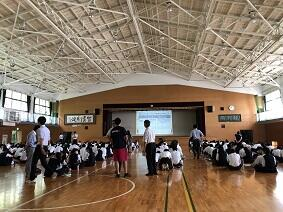SGHの課題研究のテーマを決めていくうえで、今後解決してみたいテーマをどのように一つに絞っていくのかが重要になります。本日は、ビジネスプラン作成を参考にして、体験的に学ぶ講座を、日本政策金融公庫 南関東創業支援センター所長でいらっしゃる寺田博史様を講師としてお招きして講義をお願いしました。考える対象を絞って、よいアイデアの出すための方法や、テーマを絞りこむための視点の置き方などこれからの探究活動を進めるうえでとても大切なことを学ぶことができたと思います。暑い中、講師をお引き受けいただいた寺田先生、本当にありがとうございました。
夢 新舞台


 今日7月8日（日）は、第73回国民体育大会関東ブロック大会が、茨城県神栖市にできた新カヌー会場で開催されました。この会場は、来年茨城県で開催される「いきいき茨城ゆめ国体2019」のカヌー会場となるところです。イメージキャラクターの「いばラッキー」が開会式に参加してくれました。
今日7月8日（日）は、第73回国民体育大会関東ブロック大会が、茨城県神栖市にできた新カヌー会場で開催されました。この会場は、来年茨城県で開催される「いきいき茨城ゆめ国体2019」のカヌー会場となるところです。イメージキャラクターの「いばラッキー」が開会式に参加してくれました。今日の大会は、各都県を勝ち抜いてきた代表者だけが参加する大会ですのでどの競技も質の高いすばらしいものでした。多少風は強かったもののまずまずのコンディションで競技が行われてよかったです。参加した選手の諸君は得るものが多かったのではないでしょうか。今後に向けてステップアップのいい機会になったと思います。
千葉県で震度５弱
本日は、本来なら七夕の話題なのでしょうが、皆さんご存知の通り、７日午後８時２３分ごろ、関東地方で強い地震が発生しました。気象庁によると、千葉県北東部で震度５弱が観測されたそうです。震源地は千葉県東方沖。震源の深さ66㎞で、マグニチュードは6.0と推定されています。この地震による津波の心配はないということでした。私はその時間千葉市にいて、携帯電話に一斉に地震を告げる緊急地震速報が鳴り響いた矢先に結構な揺れを感じました。皆さんの地域は大丈夫でしたか。被災されてないことを祈ります。
その後、JR千葉駅に着いても、電車が安全点検のため各駅に停まっていて、動き始めても結局、家に帰れたのが22時過ぎとなり通常より1時間30分ほど帰宅にかかる時間が多くなりました。西日本・中部地方で過去になかったほどの大雨による災害が起こっており、天災に対する備えの重要さをあらためて実感したところです。
その後、JR千葉駅に着いても、電車が安全点検のため各駅に停まっていて、動き始めても結局、家に帰れたのが22時過ぎとなり通常より1時間30分ほど帰宅にかかる時間が多くなりました。西日本・中部地方で過去になかったほどの大雨による災害が起こっており、天災に対する備えの重要さをあらためて実感したところです。
閑話 その６ 黄金比
さて、そろそろ Φ について慣れてきた？ところですが、ここでちょっと復習しておきましょう。
Φ は、2次方程式 $${\phi}^2-{\phi}-1=0$$ の正の解となりますので
$${\phi}=\frac{1+\sqrt{5 } }{2}$$ でした。そして、もう一つの負の解を Φ´ とすると、
$${\phi}^{\prime}=\frac{1-\sqrt{5 } }{2}$$ ですからこれを Φ で表すと、$${\phi}'=-\frac{1}{\phi}$$ ・・・（ア）となります。
問１ （ア）の関係を確かめてください。
問２ Φ と Φ’ の積と和を求めてください。
Φ に１を足すと２乗になったり、１を引くと逆数になったり
Φ っておもしろくないですか。
「閑話 その2」 の問２の問題ですが、
$${\phi}^2={\phi}+1$$ の両辺に Φ を掛けると $${\phi}^3={\phi}^2+{\phi}$$
この操作を続けていくと $${\phi}^{n}={\phi}^{n-1}+{\phi}^{n-2}$$ となります。
つまり、Φ の任意のべき乗は、その前のべき乗とさらに一つ前のべき乗を足せばいいことがわかります。
ここで、初項１、公比 Φ の数列 $$\lbrace{1,\phi,\phi^2,\phi^3,\phi^4, \phi^5,\cdots}\rbrace$$ を考えます。
いままで見てきたことから、Φ のべき乗を、Φ の１次の項だけで書き換えることができます。
実際に計算してみると $${\phi}^2={\phi}+1$$ ですから、
$${\phi}^3={\phi}^2+{\phi}={(}{\phi}+1{)}+{\phi}=2{\phi}+1$$
$${\phi}^4={\phi}^3+{\phi}^2={(}2{\phi}+1{)}+{(}{\phi}+1{)}=3{\phi}+2$$
$${\phi}^5={\phi}^4+{\phi}^3={(}3{\phi}+2{)}+{(}2{\phi}+1{)}=5{\phi}+3$$
$${\phi}^6={\phi}^5+{\phi}^4={(}5{\phi}+3{)}+{(}3{\phi}+2{)}=8{\phi}+5$$
したがって、もとの数列は、$$\lbrace{1,\phi,\phi+1,2\phi+1,3\phi+2, 5\phi+3,8\phi+5,\cdots}\rbrace$$ となります。
ここで Φ の係数に着目すると、｛１，１，２，３，５，８、・・・・｝
となります。この数列どこかで見たことありませんか。理系の人にはおなじみですよね。これについては次回また。
Φ は、2次方程式 $${\phi}^2-{\phi}-1=0$$ の正の解となりますので
$${\phi}=\frac{1+\sqrt{5 } }{2}$$ でした。そして、もう一つの負の解を Φ´ とすると、
$${\phi}^{\prime}=\frac{1-\sqrt{5 } }{2}$$ ですからこれを Φ で表すと、$${\phi}'=-\frac{1}{\phi}$$ ・・・（ア）となります。
問１ （ア）の関係を確かめてください。
問２ Φ と Φ’ の積と和を求めてください。
Φ に１を足すと２乗になったり、１を引くと逆数になったり
Φ っておもしろくないですか。
「閑話 その2」 の問２の問題ですが、
$${\phi}^2={\phi}+1$$ の両辺に Φ を掛けると $${\phi}^3={\phi}^2+{\phi}$$
この操作を続けていくと $${\phi}^{n}={\phi}^{n-1}+{\phi}^{n-2}$$ となります。
つまり、Φ の任意のべき乗は、その前のべき乗とさらに一つ前のべき乗を足せばいいことがわかります。
ここで、初項１、公比 Φ の数列 $$\lbrace{1,\phi,\phi^2,\phi^3,\phi^4, \phi^5,\cdots}\rbrace$$ を考えます。
いままで見てきたことから、Φ のべき乗を、Φ の１次の項だけで書き換えることができます。
実際に計算してみると $${\phi}^2={\phi}+1$$ ですから、
$${\phi}^3={\phi}^2+{\phi}={(}{\phi}+1{)}+{\phi}=2{\phi}+1$$
$${\phi}^4={\phi}^3+{\phi}^2={(}2{\phi}+1{)}+{(}{\phi}+1{)}=3{\phi}+2$$
$${\phi}^5={\phi}^4+{\phi}^3={(}3{\phi}+2{)}+{(}2{\phi}+1{)}=5{\phi}+3$$
$${\phi}^6={\phi}^5+{\phi}^4={(}5{\phi}+3{)}+{(}3{\phi}+2{)}=8{\phi}+5$$
したがって、もとの数列は、$$\lbrace{1,\phi,\phi+1,2\phi+1,3\phi+2, 5\phi+3,8\phi+5,\cdots}\rbrace$$ となります。
ここで Φ の係数に着目すると、｛１，１，２，３，５，８、・・・・｝
となります。この数列どこかで見たことありませんか。理系の人にはおなじみですよね。これについては次回また。
生徒会役員選挙
 今日は、生徒会役員選挙が行われます。今回の選挙は第71代の生徒会執行部役員を選ぶ大切な選挙となります。今回は、生徒会長については競争選挙となっています。また、他の役職（副会長、書記、会計）については信任投票となります。会長選挙についてそれぞれの候補が、昼休みを使って選挙活動を行ってきました。今日は投票前に立候補者全員の立会演説会が行われました。特に両会長候補とも、しっかりと有権者の生徒全員に考えと思いを伝えられたと思います。また、生徒の皆さんは、競争選挙、信任投票のいずれにしても代表を選ぶわけですから立候補者の考えや思いをしっかりと聞いて投票をして欲しいと思います。
今日は、生徒会役員選挙が行われます。今回の選挙は第71代の生徒会執行部役員を選ぶ大切な選挙となります。今回は、生徒会長については競争選挙となっています。また、他の役職（副会長、書記、会計）については信任投票となります。会長選挙についてそれぞれの候補が、昼休みを使って選挙活動を行ってきました。今日は投票前に立候補者全員の立会演説会が行われました。特に両会長候補とも、しっかりと有権者の生徒全員に考えと思いを伝えられたと思います。また、生徒の皆さんは、競争選挙、信任投票のいずれにしても代表を選ぶわけですから立候補者の考えや思いをしっかりと聞いて投票をして欲しいと思います。 閑話 黄金比 その５
 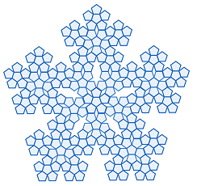
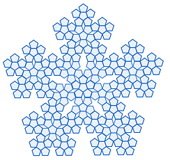 正五角形によるフラクタル
正五角形によるフラクタルその４でお話しした正五角形を使った美しい図形についてのお話です。正五角形を６枚使って「黄金三角形」（底辺に対する横の辺の比が Φ の二等辺三角形）の切込みが入ったひとまわり大きな正五角形（左の図形）を作ります。この正五角形をまた６組集めてさらに大きな正五角形を作りこれをさらに６組集めて都合正五角形216個で作った図形が真ん中の図形です。右の図形は、真ん中の図形をさらに６組集めて作った図形です。この操作はどこまでも続けられます。単純な構成方法を繰り返すしているだけなのに、こんなに美しい図形ができるのは驚きです。